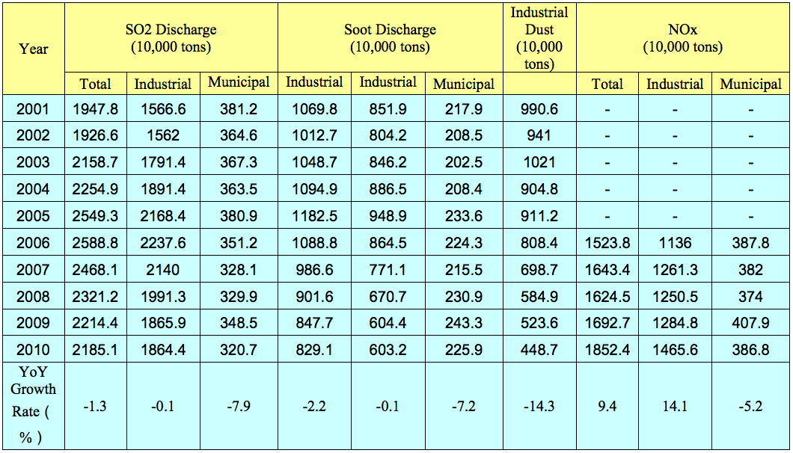

Return to top
Air pollution is one of the biggest environmental challenges to public health facing China today. The major source of air pollutants in Chinese cities has gradually shifted from conventional coal combustion to a mixture of coal combustion and motor vehicle emissions.
Common waste gas emissions are primarily composed of four main pollutants- SO2, soot, industrial dust and Nitrogen Oxide (NOx). Although emission trends have shown improvement in recent years, in 2010 the total SO2 discharge in China was still 21.85 million tons and total NOx emissions, monitored since 2006, had risen by 9.4 percent over the previous year. (See chart below)

Source: “2011 Report on the State of the Environment in China,” released by the Ministry of Environment in June 2011
In response to these trends, the Chinese Government has focused some policy and regulatory attention on measures aimed at mitigating the emissions of dangerous nitrous oxides, with one such example being the Ministry of Environmental Protection's "Notice of Fossil-Fuel Fired Power Plant Nitrogen Oxide Emission Prevention and Treatment Policy," issued on January 27, 2010. This official government policy has established the framework by which NOx emissions reduction actions will be taken under the 12th 5YP, which took effect on January 1, 2011. The policy applies to all coal-fired power plants and co-generation units, 200 MW or larger, except in designated "Focus Areas," where it applies to all units regardless of size. In addition, it is mandatory that all new, rebuilt, or retrofitted units that have undergone expansion install Low- NOx Combustion Technologies. All units currently in operation, within their scheduled operating life cycles, that do not meet stipulated NOx emission standards are required to install flue gas de-NOx technology.
Another notable measure put forth by the Chinese Government in 2011 is the revision of China's Ambient Air Quality Standards. In late 2011, China released a revised version of the standards for public opinion soliciting, which for the first time includes monitoring of PM 2.5 in the monitoring of ambient air quality. These standards are scheduled to be released in early 2012, with compulsory enforcement beginning in 2016. These new standards have triggered a tremendous round of equipment purchases throughout China, bringing about huge market opportunities for producers of PM2.5 monitoring equipment.
China's 12th 5YP (2011-2015) is further strengthening the monitoring market. In his speech at the 2009 Conference on China Environmental Monitoring Work, Vice Minister Wu Xiaoqing outlined the top priorities of environmental monitoring work for the 12th 5YP. Given these priorities, U.S. air monitoring equipment suppliers should focus on the following market opportunities in China from 2011-2015:
Expand existing monitoring networks to rural areas.
Increase monitoring capacity to achieve total volume monitoring of pollutants.
Establish an environmental monitoring information platform for publishing and releasing relevant information.
The various plans and regulations mentioned above will invariably trigger commercial opportunities in the air pollution market. U.S. firms are facing both domestic and international competition, including government-subsidized Japanese and European competitors. Though experiencing rapid growth, the domestic industry is still in a nascent stage of development, due to its short development history, decentralized management, inadequate financing and poor enforcement. U.S. air quality monitoring equipment is well received, and is often considered high-quality in terms of data accuracy, timeliness and product lifecycle. In order to seize these emerging opportunities, U.S. companies should develop suitable market entry and pricing strategies.
Return to top
The demand for modern environmental monitoring instruments in China remains high, with urgent need for advanced NOx emission reduction equipment, automatic monitoring systems and online continuous monitoring systems.
Types of NOx emission reduction equipment technology:
Combustion Modification
SNCR (Selective Non-Catalytic Reduction)
SCR (Selective Catalytic Reduction)
Combination Methods
Rising concerns about China's environment have led to a surge in demand for the following environmental monitoring instruments:
Automatic air monitoring systems on the ground: high value-added equipment which is automatic, multi-functional, instant, systematic, and intelligent is considered the most promising in China. Typical products:
On-line and/or automatic continuous emission monitoring systems for key pollution sources
- Carbon Monoxide (CO)
- Sulfur Dioxide (SO2)
- Nitrogen Oxides (NO-NO2-NOX)
- Ozone (O3)
- Particulate Matter (PM10/2.5)
Automatic and continuous monitoring systems for organic pollutants
- Volatile Organic Compounds (VOCs)
On-line dust monitors
On-site portable emergency gas monitoring equipment
Portable and personal particulate monitors
Remote monitoring systems: Investments will also increase for satellite ground systems and satellite image analysis systems to analyze the quality of the environment and changing long-term trends. China's emphasis on the protection of the ecological environment has created an enormous demand for remote sensing satellites and monitoring equipment. The industry is gradually transferring from solely ground monitoring stations to both ground and remote monitoring. Potential segments include:
Vehicle-borne equipment, such as mobile monitoring vans
Ship-borne equipment
Satellite-borne equipment and instruments, such as lesser radar monitors for pollution
GSM/GPRS modem technology (allowing remote control and data retrieval from air quality monitoring stations located almost anywhere)
Quality Assurance (QA) and Quality Control (QC) laboratory equipment, which is needed in all monitoring stations and laboratories. Instruments include:
PM2.5 samplers
SO2 analyzers
NOx analyzers
PM10 samplers
Dynamic gas dilution/mixing/calibration systems
High precision flow meters
Below is a list of major prospective buyers in China:
Ministry of Environmental Protection (MEP)
China National Environmental Monitoring Center
Local environment protection bureaus and environmental monitoring centers:
National key pollution sources – Major industries below:
Power plants
Petrochemicals
Refineries
Building materials (especially cement)
Metallurgy
Other prospective buyers
Heavily polluting enterprises engaged in the above industries
Laboratories, research institutes (environment academies), and universities
Enterprises/Organizations that need high-level industry hygiene and health standards:
Center for Disease Control (CDC)
Hazardous gas leakage monitoring in industries like petrochemical and chemicals
Return to top
Chinese Association of Environmental Protection Administration Industry http://www.chinaenvironment.com
China National Environmental Monitoring Center
Beijing Environmental Monitoring Center
http://www.bjepb.gov.cn/bjhb/tabid/189/Default.aspx
Guangdong Environmental Monitoring Center
Guangzhou Environmental Monitoring Center
Ministry of Environmental Protection Environmental Monitoring Department http://www.mep.gov.cn/
Tianjin Environmental Monitoring Center
http://www.tjemc.org.cn/lxwm/lxwm.asp
Shanghai Environmental Monitoring Center
Beijing Office
Andrew Billard
Wang Yi
Tel: (86 10) 8531-3000
Fax: (86 10) 8531-3701
Email: Andrew.Billard@trade.gov, Yi.wang@trade.gov
Shanghai Office
Ricardo Pelaez
Scott Yao
Tel: (86 21) 6279-7630
Fax: (86 21) 6279-7639
Email: Ricardo.Pelaez@trade.gov, Scott.yao@trade.gov
Guangzhou Office
Cathy Wang
Tel: (86 20) 8667-4011
Fax: (86 20) 8666-6409
Email: Cathy.wang@trade.gov
Chengdu Office
Chen Ling
Tel: (86 28) 8558-3992
Fax: (86 28) 8558-3991
Email: Ling.Chen@trade.gov
Shenyang Office
Liu Yang
Tel: (86 24) 2322-1198 ext.8142
Fax: (86 24) 2322-2206
Email: Liu.Yang@trade.gov
Hong Kong
Olevia Yim
Tel: (852) 2521-1467
Fax: (852) 2845-9800
Email: Olevia.Yim@trade.gov